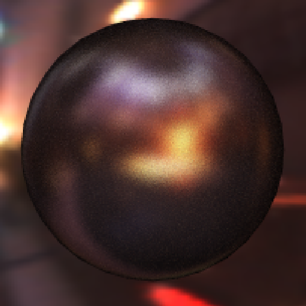
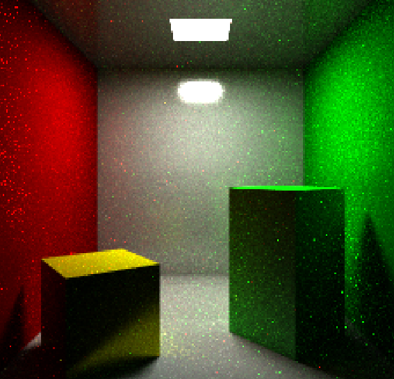
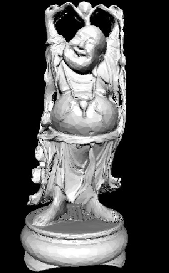

C++ based Graphics Engine
To practice my C++, I built a graphics enginge from scratch based on a course I took at the same time. I implemented ray-tracing based rendering, including, shadows, materials, reflection, and monte carlo sampling. What follows are just a few examples of my engines capabilities.

A ray-traced image of a reflective sphere with a diffuse material in an environment map

A scene with soft shadows and reflective walls. You can see the montecarlo simulation with the slight randomness in the color. Also an area light is used for light sampling.

A ray-traced image of the buddha statue. Displays the full power of optimizations as it contains over 100,000 triangles. Rendered in 2.5 seconds using BVH.